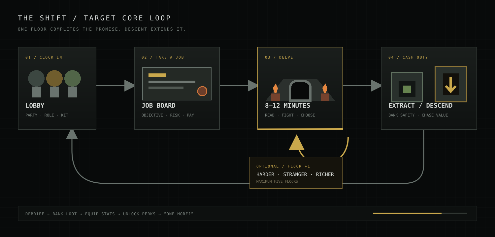
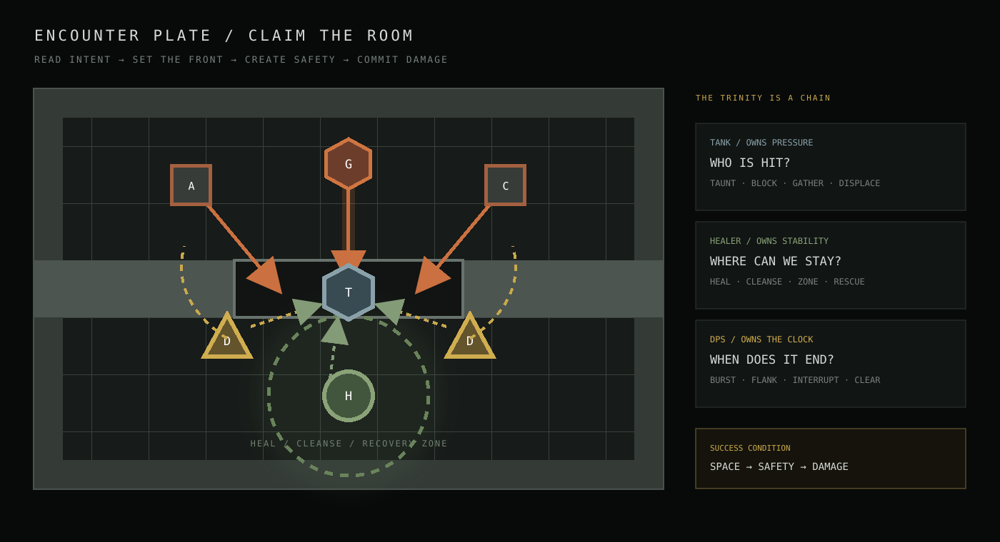

- First-person movement and collision
- Procedural room topology and roles
- Discovery map and environmental rendering
- Dynamic lights, sprites and material systems
Target-state design · Not yet implemented
Four players.
Three roles.
Ten minutes.
Clock in, take a dangerous job, and solve a dungeon under pressure. Every room asks the party to make space, protect one another and decide whether the next reward is worth the next risk.
READ THE ROOM→ACT AS A TEAM→EXTRACT OR DESCEND
Reality check
A playable world.
Not yet a game.
- Networked party and matchmaking
- Enemies, combat and encounter direction
- Classes, abilities and trinity mechanics
- Contracts, loot, extraction and progression
01 / Player promise
Raid-night teamwork.
Lunch-break length.
Dungeoneers compresses the clarity and interdependence of MMO group combat into an arcade-paced first-person dungeon. It should create stories of saves, interrupts and risky extractions without asking for a two-hour commitment.
Start quickly
From landing page to first decision in under 60 seconds. No town chores before play.
Need each other
Roles multiply one another. Teamwork is more valuable than four parallel damage rotations.
Read, then act
Enemy intent is visible early enough for a good response, never hidden behind visual noise.
Leave satisfied
Every floor pays off a complete arc. Continuing is temptation, not an obligation.
“The party should win because it understood the room—not because its numbers were bigger.”
02 / The loops
Five seconds.
Ten minutes.
One more floor.
Three loops nest inside one another. The combat loop creates tactile teamwork, the delve loop gives that teamwork an arc, and the career loop gives players reasons to clock in again without invalidating skill.

Combat heartbeat
Read intent → claim space → commit abilities → recover position.
Complete delve
Orient → fight → branch → gear → guardian → objective → extract.
Role mastery
Learn a role → unlock variants → attempt harder contracts → express identity.
03 / Delve pacing
Ten minutes with a beginning, middle and end.
The clock is a pacing promise, not a speedrun timer. Room topology already supplies halls, hubs, treasure branches and guardian beats; the encounter director turns those roles into a deliberate tension curve.
A party that declines side rooms reaches the finale without getting lost or starved.
Treasure, armory, shrine and secret rooms trade time or danger for extractable loot.
Two pressure spikes test the party's current answer before the final objective.
Bank the floor's rewards or wager them against a harder, more valuable descent.
04 / Combat grammar
First-person action.
Tile-readable tactics.
Movement should feel immediate, but combat logic remains grounded in the dungeon grid. Abilities claim tiles, enemy attacks advertise footprints, doorways matter, and line of sight is a resource the party can understand together.
Read
See enemy intent, armor, priority casts and the room's dangerous tiles.
Claim
Tank establishes the front; healer creates a sustainable position; DPS finds angles.
Commit
Spend cooldowns on a shared window: gather, interrupt, break armor, burst.
Recover
Clear hazards, rescue mistakes, rotate resources and choose the next pocket of space.
Abilities are verbs.
Taunt, block, pull, cleanse, root, flank and interrupt change the room. Raw damage is not enough.
Intent beats reflex tests.
Telegraphs create decisions. Fast attacks may test reactions only after their language is learned.
Control has visible value.
An interrupted cast, held doorway or rescued ally must be as celebrated as a critical hit.
05 / Trinity combat
Space. Safety. Damage.
The trinity is a dependency chain, not a matchmaking lock. Any composition may enter, but a balanced group gets more tactical answers—not merely better stats.

Own pressure
Controls enemy attention and pathing. Converts doorways, corners and displacement into protection.
- Taunt and threat
- Block and mitigation
- Gather and displace
Own stability
Maintains the party's usable space. Solves line of sight, cleansing, triage and rescue timing.
- Heal and shield
- Cleanse and prevent
- Zone and revive
Own the clock
Ends priority threats before control collapses. Trades positioning and setup for decisive output.
- Burst and cleave
- Interrupt and break
- Flank and execute
Target roster
Four classes. Two variants each.
Choose a familiar base class, then one of its two complete combat variants. Every variant starts with Attack, Big Attack, Control, Move and Ultimate. Floor perks reshape that chosen kit; they never add a sixth action.
Iron Vanguard
A shield-and-steel specialist who turns doorways into unbreakable battle lines.
Bloodreaver
A brutal great-weapon bruiser who protects by staggering, scattering and dominating foes.
Nightblade
A lethal infiltrator built around stealth, poison, interruption and sneak attack.
Deadeye
A patient killer who marks prey, controls paths and lands impossible shots.
Ashen Evoker
An elemental artillery caster wielding Fireball, frost walls and Meteor Swarm.
Hexbinder
A forbidden caster who stacks curses, harvests souls and opens the Black Gate.
Dawnbringer
A battle priest who burns foes with sacred light and converts faith into salvation.
Gravewarden
A grim priest who prevents death through barriers, spirits and sacred grave magic.
06 / Encounters
Every enemy asks a question.
Encounters are small tactical sentences. A room combines two or three readable enemy functions, then changes terrain or timing so the party must form a new answer.
Can the tank hold?
Heavy pressure, armor and knockback. Punishes a weak front but exposes flanks.
Tests: threat · mitigation · rear accessWho interrupts?
Long, legible casts that become catastrophic if the party ignores priority.
Tests: focus · line of sight · cooldownsCan the backline react?
Bypasses the obvious front and forces peel, relocation or controlled bait.
Tests: awareness · rescue · displacementIs the setup ready?
Numerous fragile bodies overwhelm single-target play and consume floor space.
Tests: gather · zones · area damageCan the party adapt?
Boss-scale enemy with phases tied to the room's architecture and hazards.
Tests: complete trinity chain07 / Rogue + rogue-lite
Change the verb now.
Grow the numbers later.
The run and the career reward different things. Temporary floor perks transform the five abilities you already own. Extracted loot persists between shifts and raises a bounded set of long-term stats.
Perks transform
One perk per floor
A guaranteed mid-floor shrine offers one of three perks, so even a one-floor contract gets to use its build choice.
Five actions stay fixed
A perk improves, converts or replaces an existing Attack, Big Attack, Control, Move or Ultimate—never a sixth button.
Reset on return
Run perks disappear after extraction or defeat. A five-floor expedition reaches at most five active perks.
Loot accumulates
Extracted stat gear
Weapons, armor and trinkets persist, improving Power, Guard, Vitality, Haste or Recovery within bounded tiers.
Perk library
Mastery feats unlock new class perks into future offer pools. Core abilities are always available from the first run.
Instanced loot
Each player receives a personal drop from the same chest. Unextracted finds remain at risk.
EXTRACT NOW100% bankedComplete contract · safe payout
→DESCEND+ threatKeep build · add modifier
→FLOOR VMaximum stakeBoss objective · rare expression reward
08 / Co-op contract
Friendly to join.
Meaningful to save.
Short sessions reduce social friction. The game must also protect a party from loot arguments, one mistake ending the night, and a disconnect invalidating ten minutes of teamwork.
Join at safe thresholds
Late players arrive in the next cleared room. Encounter budgets update at the next unopened door, never mid-fight.
Thirty seconds to matter
A downed player can crawl and ping. An ally must enter danger and commit to a rescue, creating the run's best stories.
Lose the wager, not the evening
Unbanked expedition value is lost; mastery progress and already banked rewards remain.
Useful without voice
Context pings cover focus, retreat, hold, interact and descend. Enemy intent does most of the talking.
No role gate.
Any 1–4 player composition can launch. Scaling adjusts enemy count, health and simultaneous mechanics, but it does not erase role identity. A party without a healer must create recovery through consumables and cleaner execution; a party without a tank must kite and control rather than receiving a hidden substitute tank.
09 / First playable target
Prove one floor before building five.
The first slice should validate the social combat loop, not the breadth of the roguelike. One coherent contract is enough to prove whether the game deserves more classes, enemies and floors.
Party shell
Host/join, lobby, role selection, reconnect and ready state.
Four classes / eight kits
Fighter, Rogue, Mage and Cleric; each selects one of two complete variants before the delve.
One contract
A single 8–12 minute floor using entrance, hall, branch, guardian and exit roles.
Five enemy verbs
Breaker, Caster, Stalker, Swarm and one architecture-aware Guardian.
Both reward layers
One guaranteed run perk, one instanced stat drop, extraction results and immediate replay.
Vertical-slice acceptance
< 60slanding page to controllable party
8–12mmedian complete-floor time
3+visible cross-role saves per delve
1 clickfrom debrief to “run it again”
Build to prove
- Network authority and party state
- Readable first-person enemy intent
- Threat, healing, damage and control interactions
- Downed/rescue and complete-floor loop
- One meaningful perk transform per starter
Defer until proven
- All eight variants and large perk catalog
- Five architectural floors
- Complex metagame economy
- Ranked difficulty ladder
- Broad narrative or cosmetic store
Definition of fun
A delve succeeds when four players can point to a moment that only happened because someone else did their job—and the party chooses “one more floor” before anyone asks.